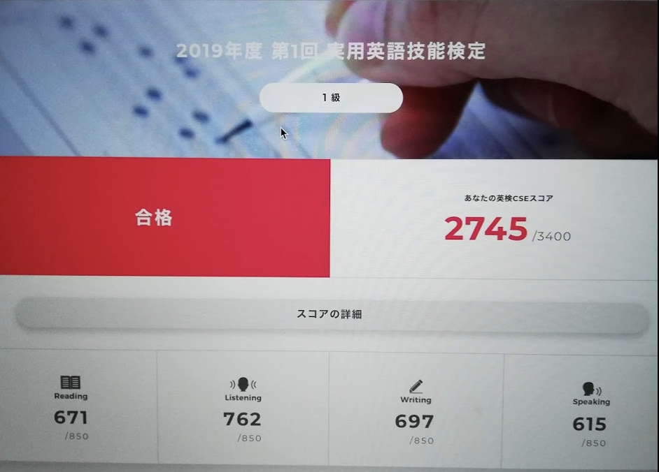

Table of Contents
1 はじめに
親の海外赴任に帯同して英語圏で数年間を過ごした子供が、小学校低学年以下で 帰国した場合、せっかく身につけた英語力を失ってしまうことが多いと聞きます。 我が家には、2年間の米国滞在の後5月に日本に帰国し、小学1年生として普通の 公立小学校に編入した娘がいますが、小学2年生で英検準1級に、小学4年生で 英検1級に合格しました。 この記事では、日本にいてどのように英語力を伸ばしたかを紹介したいと思います。
2 2年間の米国滞在
2.1 渡米後
私の海外赴任が決まったのが突然であったこともあり、子供には特に小さい頃 からの英語教育はしていませんでした。渡米前の数ヶ月からセサミストリート等の DVDを見せたくらいで、米国に来たときに子供は英語を一言も話せませんでした。
日本の幼稚園は2年または3年保育がありますが、米国のキンダーガーテンは 1年間のみです。子供はまだその年になっていなかったので、現地のプリスクール に入れました。週に5日間フルタイムで通うと、月に1600ドルもしたため、 週に3日だけ通わせました。
母親はあまり英語を話せないため、自宅アパートの中はほぼ日本でした。日本の ケーブルテレビ番組がずっと映っている状況でした。それでも娘は異国の生活に 拒否反応を示さず、少しずつ英語に慣れていきました。
年度の切り替わりで、プリキンダー(キンダーガーテンの前年)として私立の 学校に入りました。こちらは学費がプリスクールの半額くらいだったので 週5日間、普通に通わせました。
一年後、公立小学校に付属しているキンダーガーテンに入学しました。私たちの 住む地域には、比較的日本人の多い小学校もあったのですが、子供の意思で、 あえて日本人のほぼいない近所の小学校に入りました。英語のスクリーニング テストは問題なくパスしました。
2.2 帰国直前
渡米後二年が経過し、帰国の時は突然訪れました。娘はキンダーガーテンに 入って半年強となり、現地の親友もでき、端から見るとペラペラな英語を 話していました。
私たちは、子供の英語力をなんとか維持したいと考えました。 ネットでいろいろ調べたところ、海外赴任経験のある親御さんは、お子さんの 英語力維持に非常に苦労されていることがわかりました。中には、学費が何百万円 もするインタースクールに入れられている方もいらっしゃいました。
また、小学生低学年以下で帰国すると、英語力は失われてしまうことが多い ということも知りました。(米国)小学校の先生にも相談しましたが、娘は 読む力が発達しているため、英語を忘れてしまうことは無いだろう、との ことでした。
帰国後の英語力維持において、我が家が一つ有利だったのは、娘は読むことが 好きだったことです。子供向けの簡単な本ですが、おそらく分に150ワード ほどのスピードで読めていました。
中古の子供向け本を大量に買って帰国しました。また、リスニングも維持 できるようにCDブックをたくさん集めました。
3 帰国後の英語力維持
帰国後は、なるべく多くの英語に触れるように努力しました。
3.1 iTalki
英会話レッスンでは、iTalkiという語学学習サイト(?)を選びました。日本では あまりメジャーではありませんが、質が高くて比較的安価な講師が選べるので 大変重宝しています。1時間15ドル以下で、ネイティブまたはそれに準ずる講師 という条件を決め、紹介ビデオを見て(話す英語を聞いて)講師を選んでいます。 これまでのところ、主にイギリス人、ロシア人、インド人講師にお世話になり ました。
Skypeレッスンではありますが、会話よりもライティングを見てもらうように お願いしました。週に平均して3〜4レッスン受けたと思います。帰国してから の投資としては、ここに一番お金がかかっています。
3.2 読書
帰国前に集めた本に加え、帰国してからもネットで購入した本で、我が家の 本棚は娘の本でほぼ埋まってしまいました。誕生日やクリスマスプレゼント にもシリーズ物を買い与えました。
前述のSkypeレッスンと読書が、娘の英語力を伸ばしてくれたと思います。 小学2年でナルニア国物語を一通り読み、3年か4年でハリーポッターを 全巻読んでしまいました。ハリーポッターはお気に入りで、3回ほど読んだ のではないかと思います。
3.3 NetflixとAppleTV
帰国して1年ほどはNetflixを契約し、My Little Pony等の子供向け番組を 見ていました。週末はAppleTVの映画を見ました。週末の映画を除くと、 一日30分くらいだったと思います。
3.4 現地の子供向けテキスト
読書によってボキャブラリーは増やすことができますが、現地小学生向け の単語テキストを買ってやらせました。小学生低学年だと、日本語を介して 英単語を覚える意味はほとんど無いためです。
また、英語でものを考えることになれるために、英語の算数テキストを 使いました。ただ、不明点などを教えるのは母親なので、日本語でした。
4 英検対策
日本にいて子供の英語力有利に働かせるためには、英検を取っておくのが よさそうでした。中学受験をする際に、英検を取っておくと加点してくれる 学校が結構あります。大学受験くらいまでは、TOEICよりも英検が主流です。
4.1 準1級
子供が小学2年生になると、準1級を受けさせることにしました。 読書量が十分足りていたので、リーディング対策は特になにもしません でした。リスニング対策もしませんでした。ただ、英検ではボキャブラリー の難易度だけが高いので、上述の現地小学生向けボキャビルテキストを 使って補いました。
ライティングはSkypeレッスンで重点的に見てもらった他、英検のライティング テキストを買ってエッセイを書かせ、私が採点、駄目だしをしました。 正直に言って、英検準1級のライティングは小学2年生には厳しいです。 英検準1級の合格基準は大学中級程度とあり、論理的な英文エッセイを 書かねばなりません。
案の定、最初の受験ではライティング0点のさんざんな結果となりました。 これはトピック間違いと言われ、見当違いの内容を書いたときに0点になる そうです。英検はそもそも小学生を念頭においた試験では無いため、 小学生では理解できないようなトピックもたびたび出題されています。
2回目の受験に向けては、ライティングのテキストを数回繰り返して行い、 完全にパターン化したエッセイが書けるように特訓しました。英検にしか 通用しないのですが、小学2年生を合格させるにはこれしかありません。
また、試験に慣れるようにするため、過去問テキストを2回ずつやりました。
意外にも、2回目の受験ですんなり準1級に合格してしまいました。2次試験 対策も一応はしましたが、比較的簡単なテーマが出たようです。
4.2 1級
準1級に合格すると、次は1級です。 1級は準1級から難易度が数段階上がります。特に単語は、古典英米文学 にしか出てこないようなマニアックなものが出題され、知っている単語 の数を13000くらいまで増やさなくてはなりません(とはいえ、現地の 中高生レベルです)。長期戦になります。子供のモチベーションを維持する ため、私も一緒に受験することにしました。
1級向けボキャビルテキストとしてはパス単がよくできていて、私も これを使いましたが、小学3〜4年生の娘には不向きです。そこで、 娘にはBarron's 1100 words you need to knowの単語カードをやらせました。 これだと13000語には不足するのですが、単語は合格ラインをパスする ことを目標にしました。
準1級と同様に、過去問を除いて、リーディングとリスニング対策は 親子揃ってしませんでした。ライティングは、1級向けのテキストを 最終的に3巡くらいやりました。
小学4年生になって、とりあえず経験のために(受験料が高いため子供 だけ)1級を受けてみました。あと少しで合格というわけでなく、 箸にも棒にもかからない感じでもありませんでした。この結果を 見て、次々回の試験をターゲットに設定しました。
試験直前は、課題のライティングと過去問を中心にやりました。 一次試験の結果は、子供はなんとか、私は少し余裕をもって合格でした。
二次試験に向けては、ひたすらテーマを決めて話す練習をしました。 2週間しかないので、大したことはできません。ライティング向けの 特訓の成果に期待します。
その結果、子供はぎりぎり合格、私は2点不足で不合格でした。 子供は流ちょうさでだいぶ稼ぎました。さすがは帰国子女(ずるい) です。私は結果を見るまで合格を疑っていませんでしたが、 厳しい現実に直面してしまいました。

5 その後
5.1 近況
英検から数ヶ月して、再び私の海外出向が決まりました。 現在、米国ボストン近郊のアパートにいます。娘は以前通っていた 小学校に再び入学しています(COVID-19のために自宅にいますが)。
娘は、中学受験に向けて算数に苦戦しています。語学という意味では、 スペイン語に興味を示し、サマーキャンプ(リモートですが)のコース を受けています。
私の英検1級チャレンジは、元々子供のモチベーション維持のためで あったため、中止することにしました。
5.2 現在の英語力
英文を読むスピードはとても速いです。分あたり250〜300ワードで 読んでいるようです。これはネイティブの子供と比較しても相当 速い数字です。理解度に関してはだいぶ怪しいところもありますが、 楽しく読んでいるのでよいでしょう。
娘に聞くと、スピーキング能力が課題のようです。クラスで発言が 思ったほどできず、また、長いセンテンスを話すことができないため 悔しいそうです。
6 クロージング
6.1 小学生が英検1級に合格するために
小学生が英検1級を取るのは相当に難しく、以下が必要条件になってくる と思います。
- 数年間の海外居住経験
- 大量の読書(英語)
- ボキャビルによる単語力増強
- 英文ライティングの特訓
数年の海外居住経験は、スピーキングの流ちょうさとリスニング力で 小学生としての論理的思考力不足をカバーするために、避けられない 条件になると思います。大人向けの試験ですので、何らかの武器が 必要です。
我が家の場合、海外居住経験もそうですが、iTalkiでライティングを 教えてくれる優秀な講師3名(イギリス2名、インド1名)に出会えた ことが幸運でした。
6.2 (おまけ)英検1級について
子供には1級まで取らせたものの、私は英検についてあまりよく思って いません。ボキャブラリーだけが配点も難易度も他と比べて高く、 バランスの悪い試験になっていると思います。
一次試験のリーディング、ボキャブラリー、リスニング、ライティング はどれかで失敗しても他で補えるのに、二次試験のスピーキングだけ は単体で合否が決まることも変です。(済みません。負け惜しみです。)
英検対策にかける時間を、例えば一冊でも多くの洋書を読む時間に 充てた方が、英語の運用能力は上がるのにな、と思います。